k-Day 030｜奇觀
凌晨四點五十幾分，船員們打開一間一間房門大喊：「船到港了！準備下船了！」
接著船艙一陣騷動，所有人拽著行李衝往可能開啟的，像是出口的地方。
開車的人被引導到另一個出口，等待幾分鐘後，人們開始發出不耐的抱怨聲。原本在另一個樓層排隊的其他船客也擠上來。有些人試圖推門，有些人用行李介入前面早已擁擠不堪的些微縫隙，輪番推擠之下，最接近門口的兩人吵了起來，門邊看來疲憊的大叔則坐在椅子上抽煙，佈滿血絲的眼神望向虛無。
門終於開了，船員大聲重複：「不要推擠！保持距離！」
騷亂的人群拖著行李走出船艙。
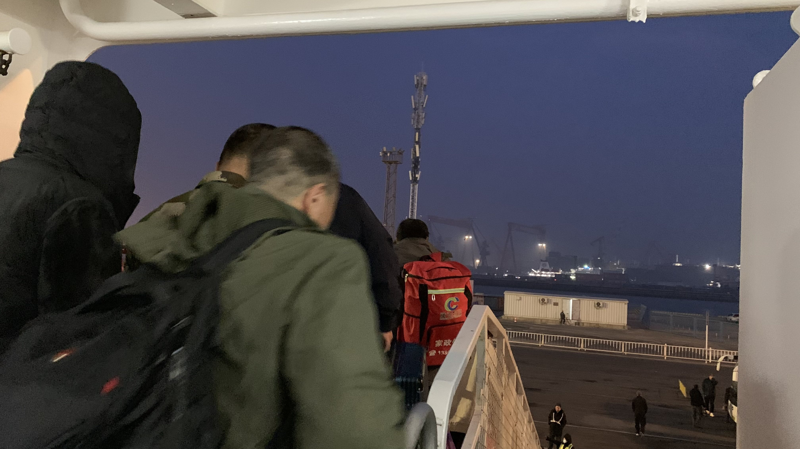
越過前面的人頭一看，只是過個海，怎麼天空就變成紫色啦！
問了引導路線的人員要去哪裡牽車，他指了船頭的方向要我過去，走到一半看到一起放車的乘客往船尾走，於是又掉頭走了回去。
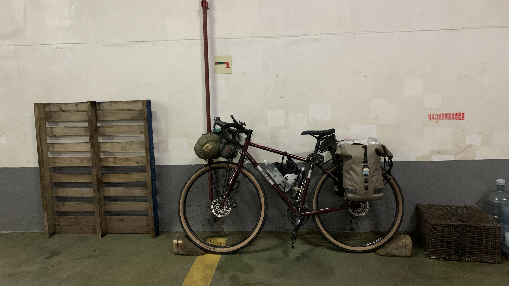
二十三號的前後輪被放上了防滑磚，真是謝謝船員的照顧了。
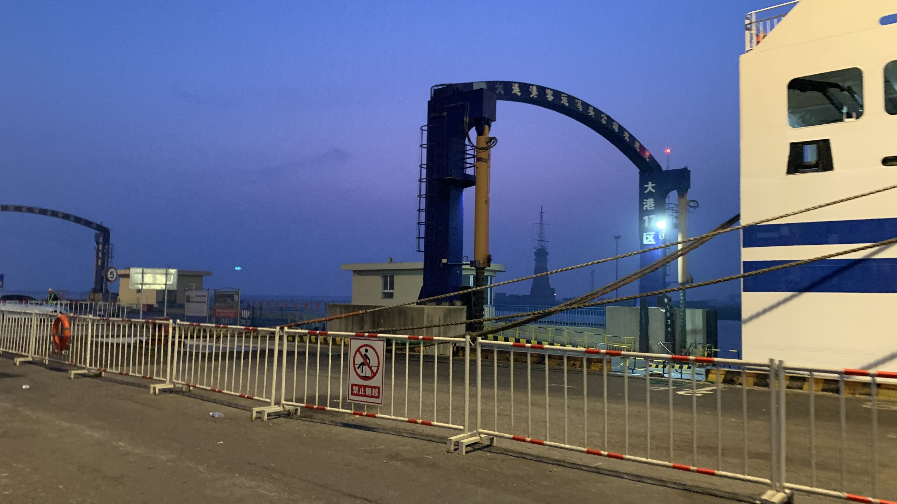
牽了車站在船尾套上羽絨外套和手套帽子，這裡比仁川又更冷了一些。正準備拍張照，船員說：「這裡不是玩的地方，天氣很冷，快點過去。」那就只好跟著車流走，但是要去哪兒呢？
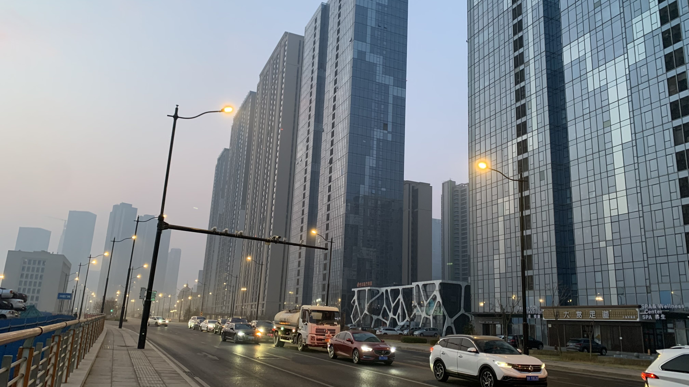
凌晨五點多，大連的天空還沒亮，一整排大樓像佈景一樣一字排開迎接到港的旅客。
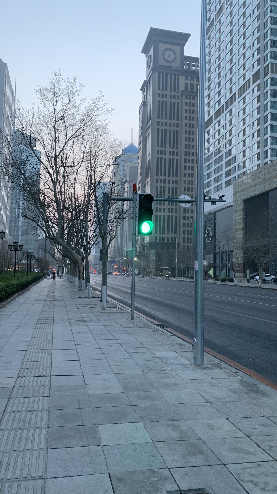
這是個手機必須直著拍才能捕捉全景的城市啊。
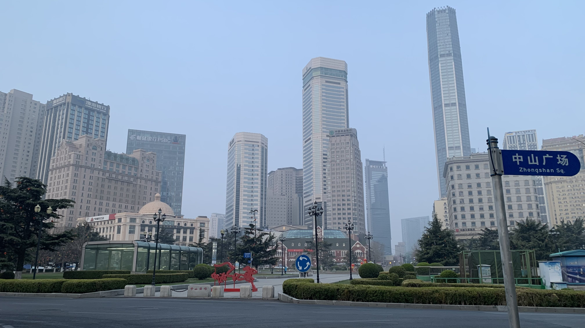
騎著車往市中心移動，完全不認識路，但是依照人生經驗，只要叫做中山的，應該會是主要幹道，因此來到中山廣場。
沿路尋找類似早餐店的招牌。無意間看見一個穿廚師袍在角落抽菸的大叔，看來會有專業資訊，把車停到他旁邊。
沒想到他立刻開口：「你這是騎行，還是上班啊？」
「是騎行的。」我說。
「你做直播嗎？拍視頻嗎？」「你該下載抖音、快手，像你這樣騎行的都是拍片，還能賺錢。」
問了大叔哪裡可以吃到好吃早餐，大叔伸手一指。原來已經到了大連有名的早市前。
「裡面有豆漿、油條，我們也是做早餐的，但都是預製菜。」說完大叔就回到自己家餐廳。
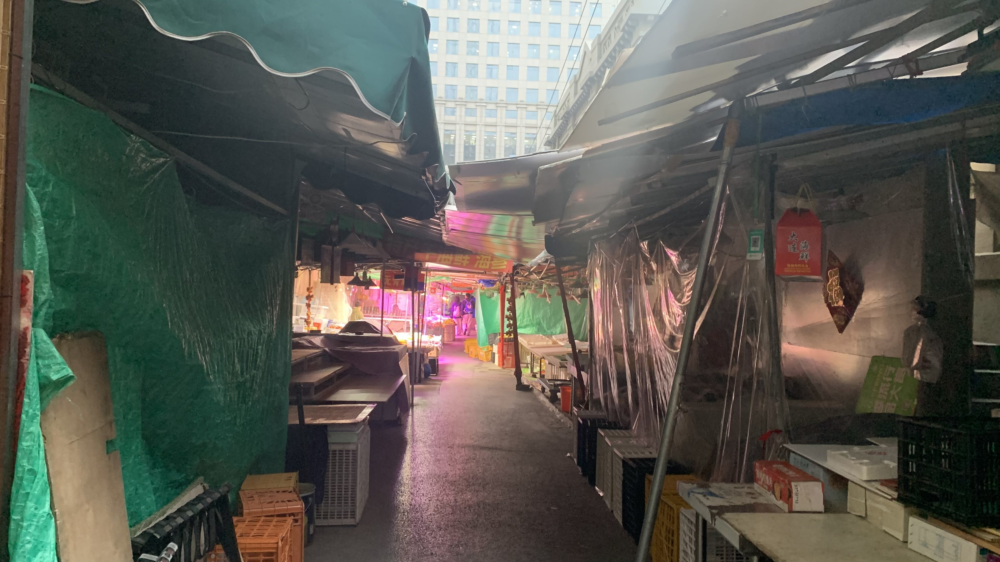
從巷子往裡面走，巷弄四通八達，最多的是賣藍莓、櫻桃和草莓的水果攤，其它有肉攤、乾貨、賣花的人正搬出幾盆茉莉花，巷子裡跟外面的高樓佈景完全是兩個世界。前面幾個和我一起進來的也都是觀光客，拿著巨型相機一陣猛拍。
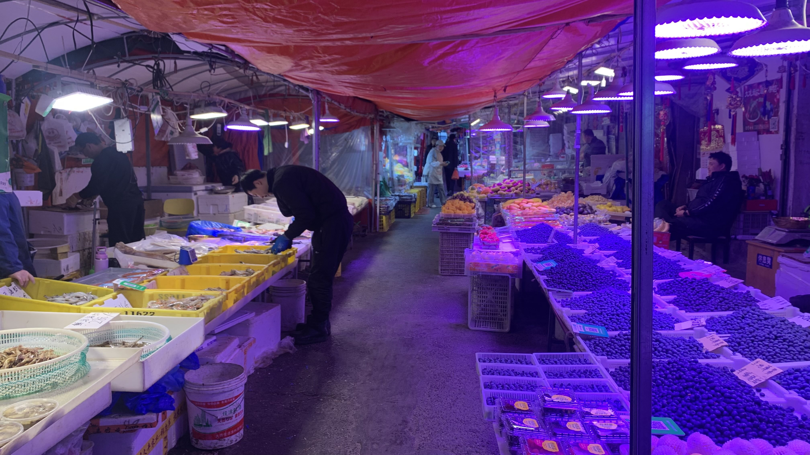
先找了一間看來乾淨整潔的早餐店，問老闆什麼好吃，年紀較大的說：「小籠包吧，剛出爐。」較年輕的老闆卻說：「吃餡餅吧，我們家餡餅挺好吃的。」
那就一份豬肉餡餅，一份豆漿，再一籠小籠包。
「先吃餡餅就好，吃不夠再點。」年輕的老闆阻止了我。認份地吃光餡餅後，趁著年輕老闆不在，跟年紀大的老闆說：「我還要一籠小籠包。」他開心的拿了蒸籠給我，確實沒滋沒味。年輕老闆是實在的人。
吃飽後又走進早市，因為牽著車，老闆問我：「是騎行的嗎？」「福建人嗎？」「做直播嗎？」買了一盒一斤25元的櫻桃，問老闆跟一斤30的有啥差別，老闆說價錢不一樣，但是櫻桃都是一樣的，沒有差別。心裡已經有預期他會抓一堆過熟裂開的次級品給我，在台灣的市場買水果總是遇到這樣的事，不過第一天，還是開放心胸花點錢體驗一下。
訂的房是在火車站旁邊，據說是俄羅斯式建築的保留區。
交通異常混亂，許多路口沒有紅綠燈，即便有也只是裝飾性質。觀察了幾個街口，這裡的規則是先站出去的先走。
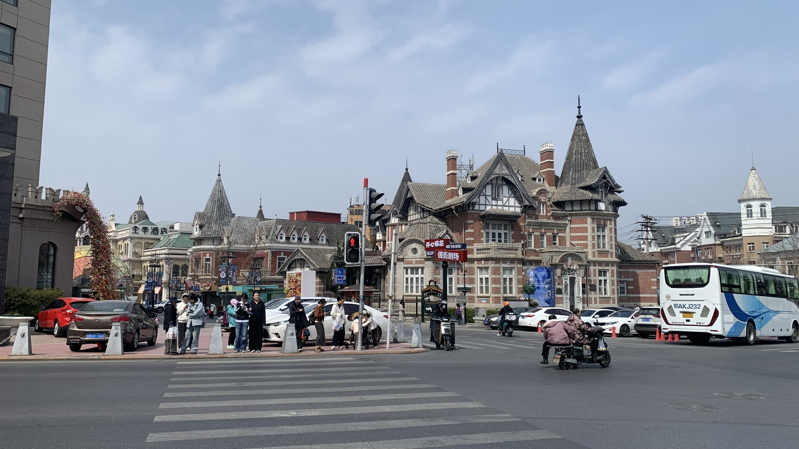
跟在路人身後闖了好幾個紅燈，被按了無數次喇叭後終於來到所謂的古蹟前。
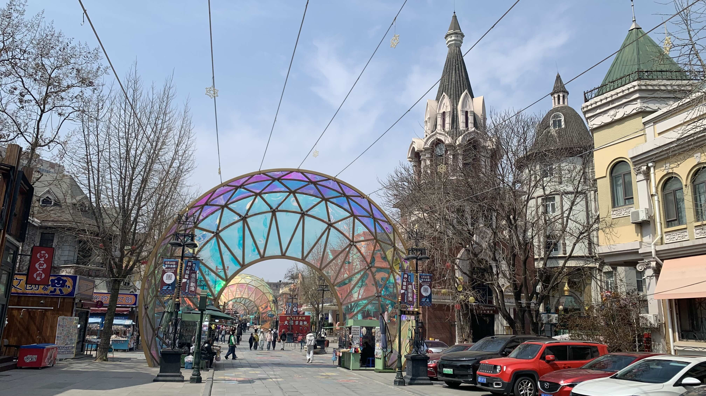
實在佈置得太像迪士尼樂園，賣的也都是制式化的觀光產品，跟港口那一排高樓一樣，看起來都像舞台佈景。還是儘速離開準備明天啟程。
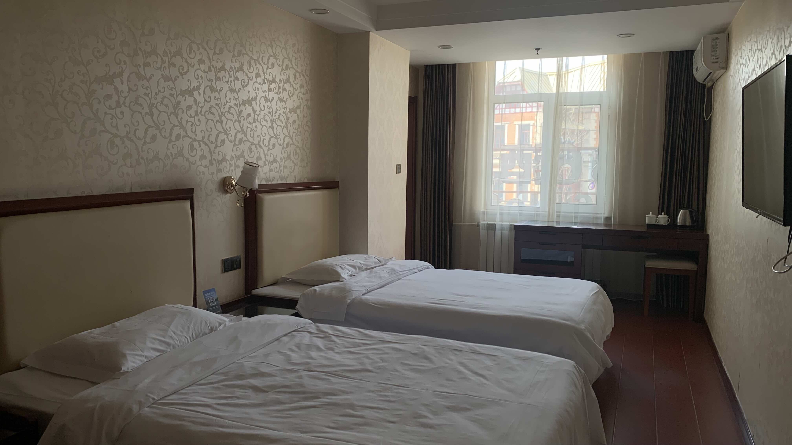
一到酒店打開裝了櫻桃的盒子，果然挑出好多裂開發霉的果實，其他一半是過熟的，至少還有一半能吃。
Spectacle是法語的表演，也有奇觀的意思。
自從來到中國，大多數找我搭話的人開頭語都是「是騎行的啊？」，再來會說「你應該拍抖音啊！」騎行這件事本身似乎不在日常的尺度裡，因此成為了值得拍攝影片的素材。若是在把日常騎乘的時間、空間都加以延伸、巨大化，就會被當成一種奇觀欣賞。欣賞著這些直播主或視頻博主時，自己和日常生活的空間不就被當成佈景了嗎？早上看到兩名女性穿著慢跑服飾，在車陣、人潮、喇叭聲和路邊堆積的垃圾之間穿梭，能在這座佈景城市堅持慢跑，本身就是一種奇觀。
今日花費： 早餐 18、櫻桃 50、住宿 485（台幣）